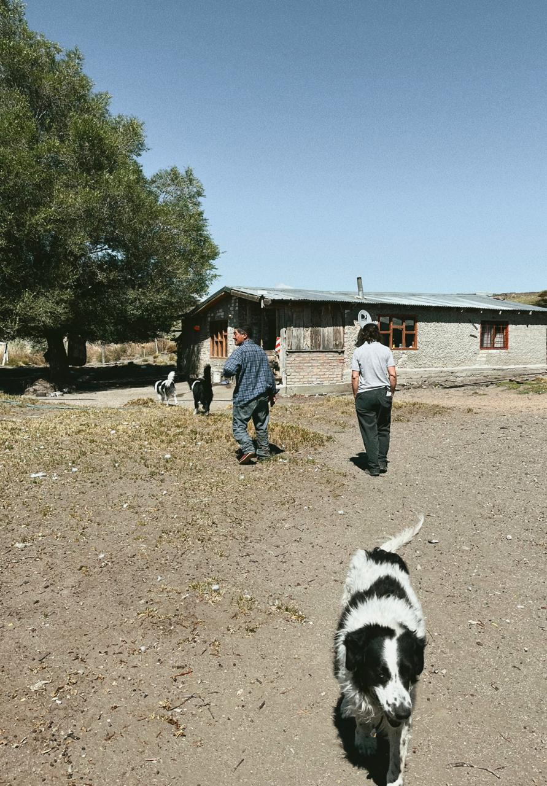
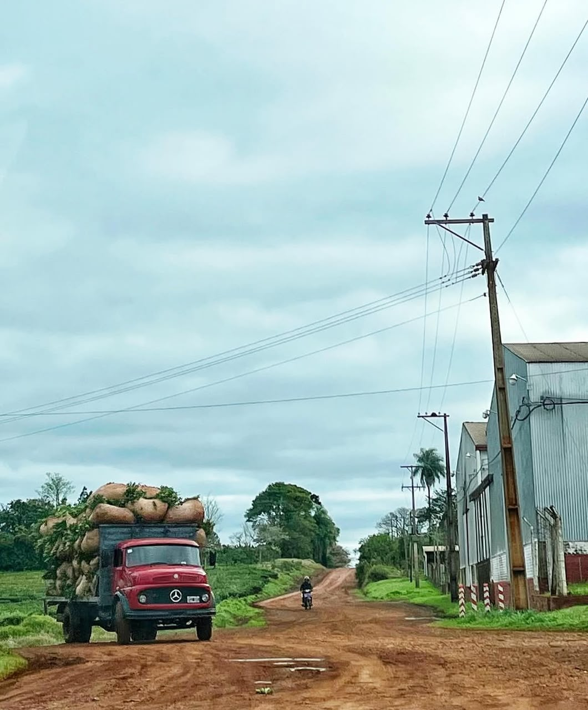

En un contexto donde la competencia se presenta como principio organizador de la vida social, el esfuerzo individual se pondera como medida del éxito y el mérito como recompensa, las relaciones sociales quedan cada vez más atravesadas por la lógica del mercado. De este modo, problemáticas de origen social y colectivo terminan siendo experimentadas como dificultades individuales, mientras se debilitan las posibilidades de construir respuestas compartidas.
Frente a esta lógica, la trama comunitaria resiste. Desde la psicología social crítica, recuperar estas experiencias supone cuestionar la figura del individuo aislado y reconocer aquellos espacios donde las necesidades comunes se convierten en punto de partida para la acción colectiva. En este sentido, el cooperativismo agrario argentino constituye una experiencia particularmente interesante: además de organizar la producción y sostener medios de vida, puede construir vínculos de solidaridad y reciprocidad desde la pertenencia territorial. A partir de un trabajo de investigación que incluyó recorridos por experiencias de cooperativismo agrario y entrevistas a asociados de cooperativas de Misiones, Río Negro y Buenos Aires, este artículo recupera algunas de esas experiencias para reflexionar sobre las posibilidades y los límites de la organización colectiva frente a las condiciones de vida impuestas por el capitalismo.
El sujeto neoliberal y la disputa por lo colectivo
Laval y Dardot (2013) sostienen que el neoliberalismo excede el conjunto de políticas económicas asociadas al libre mercado, pues constituye una racionalidad que produce y estructura las subjetividades necesarias para el funcionamiento del capitalismo contemporáneo. De ella emerge el "neosujeto", concebido como un sujeto empresarial que toma al mercado como principio de gobierno de sí. La adaptación constante, la superación ilimitada de las propias capacidades y la vigilancia permanente sobre uno mismo son algunos de los mecanismos mediante los cuales esta racionalidad moldea a los individuos y promueve una implicación total con la actividad laboral, de modo que trabajen para la empresa como si lo hicieran para sí mismos. Así, la competencia se extiende a todas las dimensiones de la vida y desplaza los lazos colectivos en favor de una lógica de competencia permanente.

Esta racionalidad contrasta con formas de organización basadas en la comunidad, entendida no como una simple agrupación de individuos, sino como una trama de relaciones que articula territorio, trabajo, identidad y memoria colectiva. Desde esta perspectiva, la existencia no se concibe como un proyecto individual y autónomo, sino como una construcción relacional sostenida en prácticas de reciprocidad, autogobierno y cuidado de lo común (Pinzón et al., 2023).
En este horizonte, el cooperativismo adquiere particular relevancia como forma de organización alternativa a la empresa capitalista. Surgidas formalmente durante el siglo XIX, las cooperativas promueven la asociación entre personas para satisfacer necesidades compartidas mediante la gestión democrática y la cooperación (Martínez Charterina, 2015). En tanto organizaciones de la economía social, mantienen además una relación estrecha con los territorios en los que se desarrollan, y sus prácticas pueden extenderse más allá de sus propios asociados (Coraggio, 2010). Frente a la competencia y la responsabilización individual, el cooperativismo abre la posibilidad de organizar colectivamente el trabajo y la reproducción de la vida.
La vuelta a la comunidad: experiencias de cooperativismo agrario argentino
Las primeras experiencias cooperativas en Argentina surgieron hacia fines del siglo XIX. En el ámbito agrario, estas organizaciones no solo funcionaron como espacios orientados a la actividad económica, sino también como ámbitos de sociabilidad y encuentro. Eran lugares donde, además de resolver necesidades materiales, se producían intercambios y se construían vínculos comunitarios (Plotinsky, 2015).
Las experiencias que aquí se recuperan corresponden a entrevistas realizadas a asociados de cooperativas agrarias de Misiones, Río Negro y Buenos Aires. En sus relatos, el surgimiento de las organizaciones aparece asociado a la búsqueda de respuestas colectivas frente a crisis económicas, sociales o laborales que amenazaban las condiciones de subsistencia. Lejos de constituir únicamente una estrategia económica, la organización cooperativa permitió transformar necesidades individuales en problemas compartidos y construir alternativas mediante la acción colectiva.

Un ejemplo es la cooperativa Amulein Com, en Comallo (Río Negro), que surgió en el contexto de una crisis climática provocada por una gran nevada en 1984. El fenómeno impidió la producción y comprometió la subsistencia de los animales, dejando en emergencia a numerosos productores de la zona. La organización colectiva a lo largo de la estepa rionegrina permitió conformar una cooperativa de consumo que agrupó a los productores afectados, ofreciendo una salida común. En Campo Ramón (Misiones), la cooperativa de consumo Yapeyú surgió a partir de las movilizaciones por la crisis del sector yerbatero durante 2000-2001, cuando un grupo de productores decidió organizarse para construir una salida a la situación que atravesaban.
Si bien la búsqueda de una salida en común se remonta ya a sus orígenes, en los relatos la organización colectiva no aparece vinculada únicamente a esto. También se expresa en prácticas cotidianas mediante las cuales los asociados sostienen su compromiso con el entorno comunitario. En este sentido, el principio de compromiso con la comunidad (ACI, 1995) constituye una dimensión central del sentido que atribuyen a sus organizaciones. La cooperativa no encuentra su justificación solamente en la resolución de las necesidades de sus miembros, sino también en su contribución al territorio del que forma parte.
Esta preocupación se expresa también en iniciativas que buscan dar respuesta a necesidades de la población local. La generación de fuentes de trabajo, por ejemplo, aparece como una forma concreta de contribuir al bienestar comunitario, aun cuando quienes se benefician no formen parte de la cooperativa.
La solidaridad también se manifiesta frente a situaciones de necesidad que exceden la actividad productiva de las cooperativas. Los asociados relatan iniciativas de ayuda ante problemas de salud, emergencias y acontecimientos que afectan a otros habitantes de la zona. Estas acciones muestran que la cooperación no se limita a los integrantes de la organización, sino que se extiende hacia quienes forman parte de la comunidad.
Este último relato pone de manifiesto una dimensión particularmente significativa: las cooperativas movilizan recursos y articulan acciones para atender necesidades que exceden su actividad específica. Esto expresa su potencial solidario, pero también evidencia las condiciones de desprotección en las que las comunidades deben afrontar problemáticas que demandarían respuestas gubernamentales. La solidaridad cooperativa constituye una instancia necesaria, pero no debería convertirse en el único recurso disponible. Resulta esencial avanzar hacia formas de organización colectiva que, partiendo de esas experiencias, puedan articular demandas, denunciar las condiciones de desprotección y exigir respuestas estatales. Se trata de que la ayuda mutua no quede circunscripta a resolver las consecuencias del sistema, sino que también contribuya a la organización y la lucha contra las condiciones sociales que las producen.
La potencia y las contradicciones de lo colectivo
Las experiencias analizadas permiten reconocer en el cooperativismo agrario una forma de organización que, además de responder a necesidades económicas y productivas, construye vínculos de solidaridad, reciprocidad y compromiso con la comunidad. Ser cooperativista implica, en estos relatos, formar parte de una trama de relaciones que excede los límites de la organización y compromete con las necesidades de quienes habitan el territorio. La cooperación no se reduce a una modalidad de organización del trabajo: expresa también una forma de construir relaciones sociales en las que las necesidades de los otros son reconocidas como parte de las propias.
Desde la perspectiva de la psicología social crítica, estas experiencias permiten cuestionar la naturalización de respuestas individuales frente a problemáticas de origen social. Si la racionalidad neoliberal promueve un sujeto que se concibe como una empresa de sí mismo y reproduce la competencia como principio organizador de sus relaciones, las prácticas cooperativas muestran que existen otras formas de organizar la producción y la vida cotidiana. La comunidad no constituye únicamente un espacio de pertenencia, sino también una trama de relaciones que puede habilitar formas de organización y resistencia frente a la precarización, la desigualdad y la desprotección.
Allí donde la lógica mercantil fragmenta y enfrenta, el cooperativismo agrario permite reconocer que también es posible construir formas de organización que pongan en el centro la vida, el trabajo y las necesidades comunes. Sin patrón en el medio, podemos recordar quiénes somos, de dónde venimos y a quiénes nos debemos.
Sin embargo, reconocer la potencia de estas experiencias no implica desconocer sus límites. Las cooperativas se desarrollan en el marco de estructuras capitalistas que condicionan sus posibilidades. La solidaridad y la organización comunitaria pueden ofrecer respuestas frente a necesidades desatendidas, pero no reemplazan la transformación de las condiciones estructurales que las producen. Su potencial emancipador se vincula, precisamente, con la capacidad de fortalecer la organización colectiva, construir conciencia sobre los intereses compartidos y articular esas experiencias con procesos más amplios de lucha por condiciones de vida y trabajo dignas.
Referencias bibliográficas
- ACI. (1996). Declaración sobre la identidad cooperativa. Idelcoop, 23(97). Recuperado de https://www.idelcoop.org.ar/revista/97/declaracion-identidad-cooperativa
- Coraggio, J. L. (2010). Territorio y economías alternativas. Revista de Ciencias Sociales, 2(18), 7-30. http://ridaa.unq.edu.ar/handle/20.500.11807/1495
- Laval, C. y Dardot, P. (2013). La nueva razón del mundo: Ensayo sobre la sociedad neoliberal. Gedisa.
- Martínez Charterina, A. M. (2015). Las cooperativas y su acción sobre la sociedad. REVESCO. Revista de Estudios Cooperativos, 117, 34-49.
- Pinzón, J. A. M., Ocampo, A. L. M., & Maldonado, J. E. S. (2026). La comunalidad como principio ontológico-político. Prometeica-Revista de Filosofía y Ciencias, 33, e21472-1.
- Plotinsky, D. (2015). Orígenes y consolidación del cooperativismo en la Argentina. Revista Idelcoop, 215, 157-78.